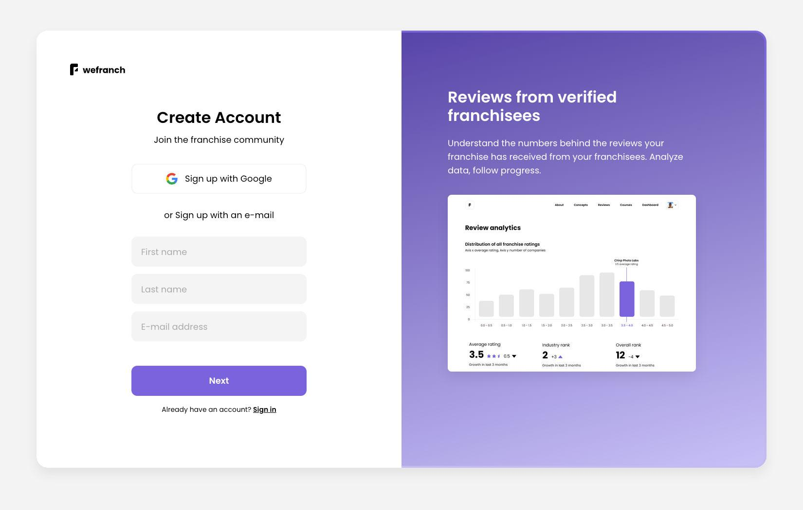
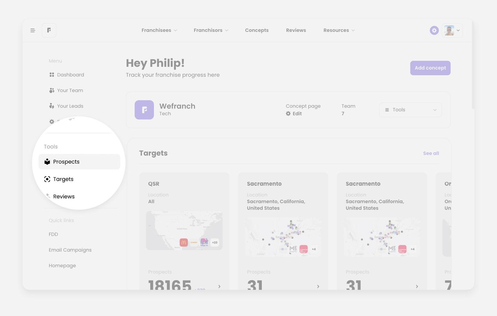
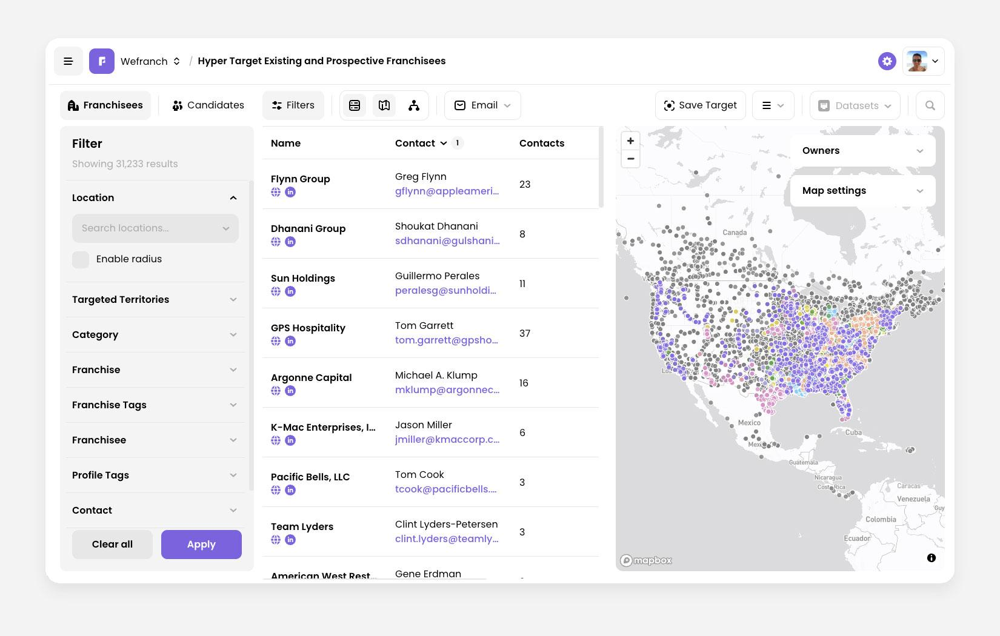
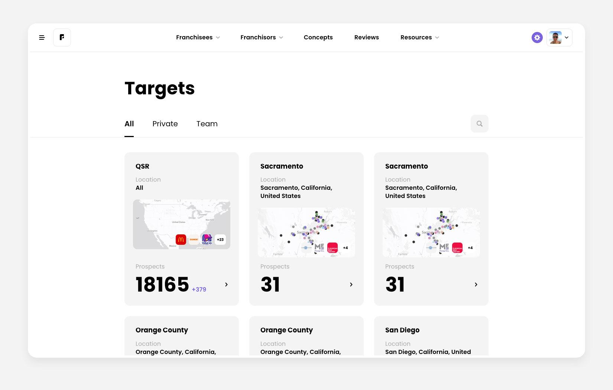
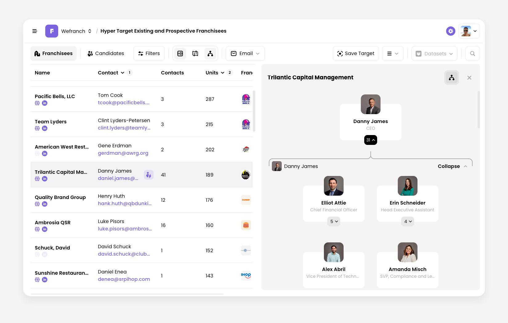

Getting started with the MUMBO tool
Create your account
Start at the Wefranch sign-up page. Sign up with Google, or enter your details and follow the prompts.
- Open the sign-up page and create your account.
- When you are signed in, open Prospects from the dashboard menu and start exploring franchisees.


Find prospects
The Prospects workspace brings operator records, contact details, filters, and the map into one view.
- Open Prospects and use the filters to narrow the list by location, franchise, number of units, or another criterion.
- Open a record to review the contacts. One franchisee organization can have several people in its org chart.
- Export up to 100 leads a week to build a focused outreach list.

Explore shared targets
Targets work like saved searches in Prospects. They let you return to the same prospects without rebuilding your filters. Browse targets from Wefranch or from your teammates, then open one that fits your market.
- Open the Targets browse page.
- Use All, Private, or Team to find the board you need.
- Open a board and review its prospects before you start outreach.

Make your outreach personal
MUMBO can show contact details for several people in one franchisee organization. Use that context to choose the right person and write a one-to-one message.
- Use franchisee org charts to see the team behind a location.
- Use account-based marketing to see how custom targets support focused outreach.
